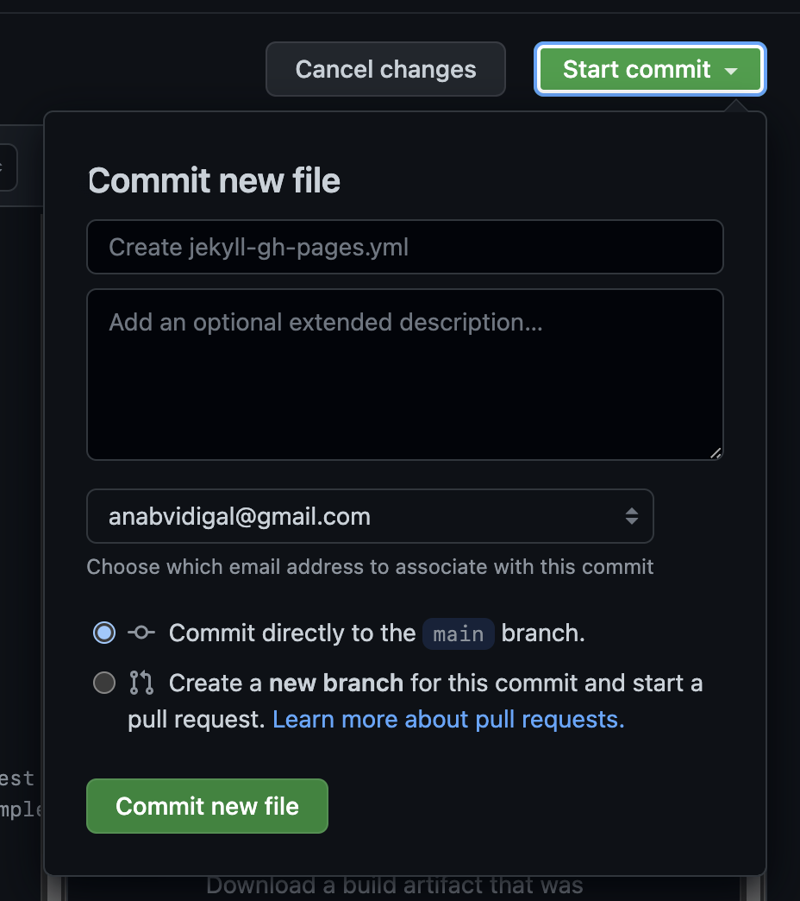

How to publish a simple GitHub Pages with a Jekyll template
Since deciding on becoming a developer professionally and migrating from a design career to programming, I remembered that learning in public could be a good ally to document my discoveries and struggles along the way.
I thought that setting up a blog within GitHub pages could be a nice way to refresh my Git and GitHub skills, so I did some research and made my first attempts. By the way, I found this cheatsheet from GitHub that helped me remember the main commands.
This task turned out to be more difficult than I imagined, the tutorials I found worked on video, but I couldn’t figure out how to make my site go live. So, I want to share how I figured out the implementation that worked for me and could perhaps help you as well.
Preparing the environment
The basic setup for this includes installing Ruby and Jekyll via terminal:
Choosing a template
There are many Jekyll themes available, the one I’m going with is Poole.
Forking a template
First, we’re going to fork the template to our GitHub. I’m forking all branches.
Next, we need to change that forked repository to our github.io personal name. This will be your username.github.io.
Cloning into our machine
Go ahead and copy the URL to your repository with the template. Now, on the terminal, navigate to the folder where you want to have your project, and run
git clone yourURLOnce that’s done, cd to your directory and ls, the files should be there.
Editing the template
With your code editor of choice, find your project folder and start by editing the _config.yml file. Here, it’s important to change the url to your own github.io domain. Go ahead and edit your personal info as well.
Once that’s done, add all your changes and commit by running
git add .
git commit -m “Commit description”Now, we need to run
bundle installHere, I ran into an error, telling me that my Ruby version was incompatible. This was solved by running
bundle updateThen I followed the Poole’s instructions to install the Jekyll gem and related dependencies
gem install jekyll jekyll-gist jekyll-sitemap jekyll-seo-tagHere, I ran the bundle install again to see if it was successful
bundle installAnd the terminal said the bundle was installed successfully. Now, we have the image.
Running a local server
To run your template on a local server, do the following command on the terminal
bundle exec jekyll serveOnce the server is up and running, copy the server address informed by the terminal and open it on your browser. The website will show up with your template and the edits you made earlier.
If you make more changes on your code while the server is running, make sure you save them and refresh your browser: the changes will appear live.
Once you’re done editing, stop the server following the terminal instructions (on my Mac, this was done with control+c). Commit and push all your changes.
git add .
git commit -m “Commit description”
git pushDeployment
Now it’s time to get all the work that was done to the GitHub Pages.
Open your repository on GitHub, go to Settings > Pages > Build and deployment.
There, you need to change source to GitHub Actions.

This step is the one I struggled with the most, because I presumed it was important, but didn’t know how to set up. It was a blind spot, there were no explanations on this step on the resources I looked up. After some time I got brave enough to follow the standard steps and see what would happen, and there it was, a live template!
Now, go to Settings > Pages, again, and you should see the card saying your site is live.